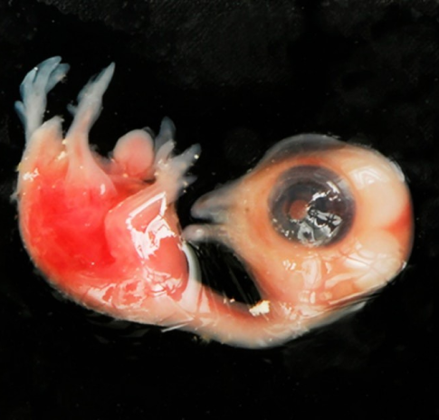
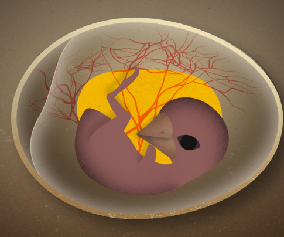

<!--chicken eggs -->

<section class="section-main section-hatching-eggs __one-article-page">
    <div class="container">
        <div class="section-inner __one-article-page">
            <div class="main-title-block __common-margin-bottom __one-article-page __circum-title">
                <h2 class="section-main-title __one-article-page ">Куриные эмбрионы <br> 5-10 <br> суточного возраста</h2>
            </div>

            <section class="section-content __one-article-page __first-row-content">
                <div class="image-block __chicken-embryo">
                    <picture class="picture image-block__picture">
                        
                    </picture>
                    <picture class="picture image-block__picture">
                        
                    </picture>
                </div>
                <div class="text-block __one-article-page ">
                    <p>
                        <strong>Куриные эмбрионы имеют хорошо развитую сеть неповрежденных кровеносных сосудов. Скорлупа белого цвета. Поверхность скорлупы ровная, без бугристостей и видимых повреждений. Перед отправкой куриные эмбрионы овоскопируют с целью отбраковки.</strong><br></p>
                       <p><strong> Куриный эмбрион 6-суточного возраста:</strong><br>
                        Клюв выдвинут вперед, но яйцевого зуба ещё нет. Нижнечелюстной отросток удлинен и слит с
                           подъязычной дугой. Различим слуховой проход. Второй палец крыла заметно длиннее остальных.
                           Пальцы ног как зубья гребня, но заметны перепонки между ними. Содержимое желточного мешка
                           увеличилось и вместе с желтком составляет 65% массы желтка.
                    </p>

                    <p><strong> Куриный эмбрион 6-суточного возраста:</strong><br>
                        Клюв выдвинут вперед, но яйцевого зуба ещё нет. Нижнечелюстной отросток удлинен и слит с
                        подъязычной дугой. Различим слуховой проход. Второй палец крыла заметно длиннее остальных.
                        Пальцы ног как зубья гребня, но заметны перепонки между ними. Содержимое желточного мешка
                        увеличилось и вместе с желтком составляет 65% массы желтка.
                    </p>
                    <p><strong> Куриный эмбрион 7-суточного возраста:</strong><br>
                        Заметно увеличено количество амниотической и аллантоисной жидкостей.
                        Аллантоис покрывает более 1/3 поверхности сосудистого поля желточного мешка.
                        Промежуток между нижней челюстью и клювом сузился до маленькой выемки. Склеральных сосочков
                        глаза 6 штук. Виден рудимент пятого пальца ноги. Первые сосочки на спине от плеча до крестца
                        по 7 рядов; на бедре они едва заметны. Белок яйца уплотнен до предела.

                    </p>
                    <p><strong> Куриный эмбрион 8-суточного возраста:</strong><br>
                        Склеральных сосочков выпуклого глаза стало 13-14 шт. Они образуют по обе стороны от
                        хориоидальной щели глаза полный круг. Голова имеет форму, характерную для птиц. Клюв удлинен,
                        заметны ноздри и более четко выражен яичный зуб на кончике клюва. Отчетливо выражен локтевой
                        изгиб крыла. Зачатки перьев слабо выступают над поверхностью кожи, по средней области туловища,
                        особенно в области лопатки, шеи, на коже бедра. Масса белка – 20% к массе яйца.

                    </p>
                    <p><strong> Куриный эмбрион 9-суточного возраста:</strong><br>
                        Рост хориоаллантоиса завершен на 80%; клюв начинает открываться.

                    </p>
                    <p><strong> Куриный эмбрион 10-суточного возраста:</strong><br>
                        Куриный эмбрион 10-суточного возраста:
                        Аллантоис охватывает почти всю внутреннюю поверхность скорлупы, кроме небольшого количества
                        белка (видно при просвечивании). Амнион сильно заполнен жидкостью и растянут. Округлость век
                        глаза имеет форму эллипса. Мигательная перепонка глаза покрыла ближний ряд склеральных сосочков,
                        доходит до роговицы. Ноздри, расположенные у основания клюв, имеют вид щелей. На концах пальцев
                        ног и первом пальце крыла еле заметны зачатки когтей. Исчезают межпальцевые перепонки.
                        Появились зачатки перьев (бугорки) вокруг пупочного кольца. Хорошо стали видны зачатки перьев
                        на поверхности кожи крыла, ноги, головы, возле глаз вдоль грудины (по три-четыре ряда с каждой
                        стороны.) Перьевые сосочки на спине и шее заметно выступают над кожей.


                    </p>

                    <span class="uppercase"><strong>Характеристики:</strong></span><br>
                    <span class="uppercase">Длина эмбрионов в зависимости от возраста составляет (длина тушки без головы и шеи):</span>


                    <ul>
                        <li>
                        <span>
                            6 дней – 11-13 мм
                        </span>
                        </li>
                        <li>
                             <span>
                            7 дней – 13-15 мм
                        </span>
                        </li>
                        <li>
                            <span>  8 дней – 15-17 мм</span>
                        </li>
                        <li>
                            <span>  9 дней – 17-19 мм</span>
                        </li>
                        <li>
                            <span> 10 дней – 19-21 мм</span>
                        </li>
                    </ul>


                    <span class="uppercase">Масса эмбрионов в зависимости от возраста составляет:</span>


                    <ul>
                        <li>
                        <span>
                            6 дней – 1,3-1,5 г
                        </span>
                        </li>
                        <li>
                             <span>
                            7 дней – 1,6-1,7 г
                        </span>
                        </li>
                        <li>
                            <span> 8 дней – 1,8-1,9 г</span>
                        </li>
                        <li>
                            <span>  9 дней – 2,0-2,2 г</span>
                        </li>
                        <li>
                            <span> 10 дней – 2,2-2,5 г</span>
                        </li>
                    </ul>


                </div>

            </section>


        </div>
    </div>

</section>
<!--chicken eggs -->

